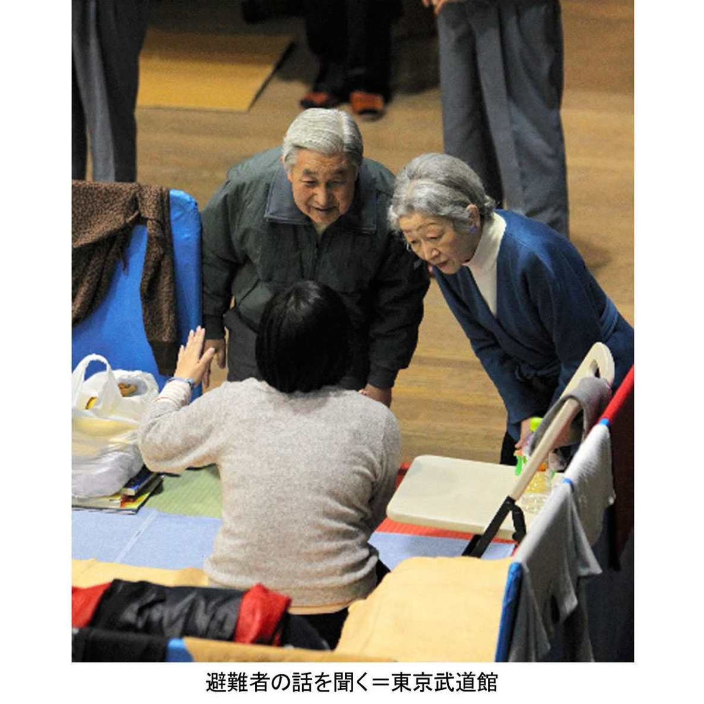
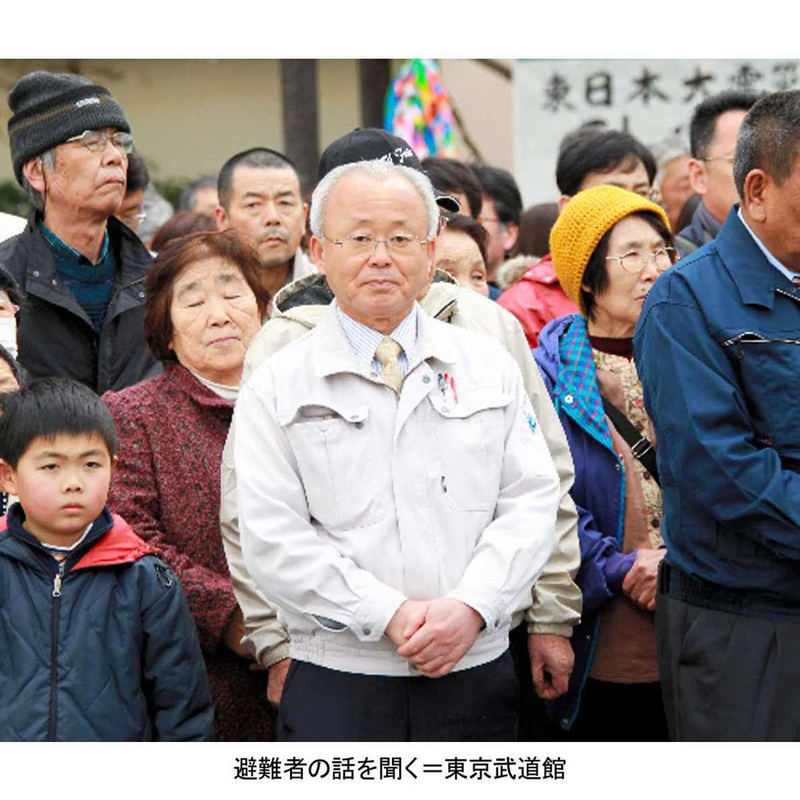

| プロメテウスの罠〔４６〕 震災と皇室「放射能学び、飯舘村に行きたい」 (朝日新聞デジタルＳＥＬＥＣＴ) | |
| 朝日新聞 | |
| (2014) | |
「できるだけ早く被災者を見舞いたい」「原発敷地に入った消防隊員の健康は大丈夫ですか」――東日本大震災と原発事故では皇室も心痛を極めた。天皇と皇后は震災直後から原発事故避難民らの御用邸利用や食材提供を申し出た。東北各地の被災地では長時間、家や家族を失った避難民らの話を聞き、労りと励ましの言葉をかけた。救援活動に汗を流す自衛隊員や自治体職員らには「ありがとう」と感謝した。被災者に真摯に向き合い、勉強を重ね、子どもの放射線被害を気遣う両陛下の等身大の姿を、立ち会った人々の多くの証言とともに追う。

内容紹介
「できるだけ早く被災者を見舞いたい」「原発敷地に入った消防隊員の健康は大丈夫ですか」――東日本大震災と原発事故では皇室も心痛を極めた。天皇と皇后は震災直後から原発事故避難民らの御用邸利用や食材提供を申し出た。東北各地の被災地では長時間、家や家族を失った避難民らの話を聞き、労りと励ましの言葉をかけた。救援活動に汗を流す自衛隊員や自治体職員らには「ありがとう」と感謝した。被災者に真摯に向き合い、勉強を重ね、子どもの放射線被害を気遣う両陛下の等身大の姿を、立ち会った人々の多くの証言とともに追う。
初出
朝日新聞 二〇一四年四月十七日～五月六日
第１章 「御用邸を避難所に」
第２章 秋篠宮家が絵を提供
第３章 「お気持ち」は続く
第４章 石原知事自ら出迎え
第５章 東北へ「私が行く」
第６章 廃校舎、急いで下見
第７章 ひざ立ちで語りかけ
第８章 地震や原発を勉強
第９章 隊員の健康気遣う
第１０章 箸は持ち帰った
第１１章 思わぬアンコール
第１２章 真っ先に自衛隊の名
第１３章 気休めではなく
第１４章 窓は開けたままに
第１５章 「原発を見たい」
第１６章 放射能、次々と質問
第１７章 福島の野菜持ち帰り
第１８章 傘を閉じて黙礼
第１９章 「飯舘村に行きたい」
第２０章 にじみ出たお気持ち
宮内庁の管理課長だった和地国夫（わちくにお）（６１）は震災のあと、長官（当時）の羽毛田信吾（はけたしんご）（７２）から呼ばれた。
「部長といっしょに来てくれ」
震災後最初の金曜日、と覚えている。記憶通りなら２０１１年３月１８日のことだ。
管理部長の鈴木武（すずきたけし）（６２）とともに長官室に入ると、羽毛田が切り出した。
「天皇皇后両陛下のお気持ちとして、那須御用邸（なすごようてい）を避難所にできないかということだ。どうだろうか」
那須御用邸は栃木県那須町にある皇室の別荘だ。現在は那須岳を仰ぐ斜面に広がる約６６０万平方メートルの広大な山林に、両陛下用の本邸と皇太子家用の付属邸、随従の宮内庁職員らが泊まる供奉員（ぐぶいん）宿舎など計７千平方メートルの建物が散在する。
羽毛田「供奉員宿舎は使えないだろうか」
和地「避難所にするのはちょっと難しいでしょう」
御用邸は避暑地としてつくってある。暖房設備がないので、雪が残る今の時期では寒すぎる。
和地は、不適である理由をさらにいくつかあげた。
山林の中で交通が不便なこと。
大人数を泊める寝具がないこと。
御用邸詰めの常勤職員は６人しかおらず、多数の避難者を世話できないこと――。
羽毛田は「そうだね」といったが、すぐには納得しなかった。
「でも、何とか使えないか考えてみてくれないか」
宮内庁で両陛下の意向を直接聞く立場にいるのは２人だけだ。
１人は宮内庁長官。「オモテ」と呼ばれる事務方のトップだ。
もう１人は侍従長（じじゅうちょう）。「オク」と呼ばれる、両陛下の身の回りの世話をする侍従職のトップである。
羽毛田が和地に伝えた「お気持ち」が、両陛下から直接いわれたものであることは明らかだ。それに羽毛田の粘り方からみて、陛下はかなり強くおっしゃったようだ、と和地は思った。
被災地から栃木県内の避難所に避難した被災者は震災１週間後の３月１８日午後４時の時点で２４４２人。うち２２７７人が福島県からの避難者だった。東京電力福島第一原発が相次いで爆発を起こしており、さらに増えそうだ。御用邸のある那須町だけで、避難者は４６１人いた。
課長室に戻った和地は「そうだ、御用邸には温泉が引かれている」と思い出した。供奉員用の風呂も３カ所ある。これなら使える。長官室に引き返した。
「避難者を招いて、温泉を使ってもらったらどうでしょうか」
羽毛田がにっこりした。
「わかった。県に連絡しよう」
週明けの２１日、実施が固まった。
そのころ東京の皇居では、両陛下から被災者の入浴用タオルの費用提供の申し出があった。
宮内庁では、天皇皇后両陛下の意向を受けて那須御用邸の風呂を避難者に開放する作業が始まった。
２０１１年３月２４日には、避難者の入浴用タオル約３４００枚を宮内庁講堂で袋詰めした。秋篠宮家から紀子妃（４７）や眞子（２２）、佳子（１９）各内親王も参加した。
前日の２３日、宮内庁管理課長の和地国夫（６１）は秋篠宮（４８）から呼ばれている。
秘書課長の和田裕生（わだひろお）（５５）らと宮邸を訪れると、秋篠宮はすでに那須御用邸の件を知っていた。
「被災者の心のケアが大事です」との話があった。宮邸を出た後、「心を癒やすには、絵があったらよいでしょう」との紀子妃の発案で、宮邸にあった絵が提供された。
和地が御用邸の風呂を開放する実施計画を長官の羽毛田信吾（７２）に提出したのは、２１日のことだった。
世話をするため、東京から宮内庁職員を２人、３泊４日ずつの交代で御用邸に派遣する。皇室の護衛や警備を担当する皇宮警察も、皇宮護衛官２人ずつの派遣を決めた。
職員が泊まるための布団や毛布は宮内庁から運んだ。冬は使わないプロパンガスの復活や風呂掃除も手配する。休憩室で提供する茶菓子や飲み物は、費用の寄付を職員から募り、日ごろ皇族方の食事や宮中晩餐（ばんさん）会などの調理を担当する大膳（だいぜん）課に頼み、業者への手配をしてもらった。
両陛下からは「バスタオルの費用を出しましょう」と寄付があった。秋篠宮家から借りた絵は、避難者が風呂から上がった後、茶菓子を食べてもらう休憩室に掲げられた。
栃木県や那須町も協力した。町内の避難者に呼びかけ、町のマイクロバスで送迎することになった。
２６日午前、那須御用邸供奉員（ぐぶいん）宿舎で和地はあいさつした。
「御用邸は温泉がいいので、ゆっくり入ってください。風呂は３カ所あります。飲み物もあります」
風呂は４月１９日までに、延べ４４９人が利用した。
和地は再び、羽毛田に呼ばれた。
「御料牧場（ごりょうぼくじょう）の生産品を、避難者に配布できないだろうか」
栃木県内にある御料牧場では、牛乳や鶏卵が生産されている。ふだんは皇族の食事や、賓客を招いた晩餐などで使われる食材だ。それを避難者に提供できないかという。両陛下のお気持ちだ、と和地は思った。
それは可能だ。ただ問題は、御料牧場の施設が地震で大きな被害を受けていることだった。
宮内庁施設のうち、東日本大震災の揺れで大きな被害を受けたのが栃木県の御料牧場（ごりょうぼくじょう）だった。
震災発生後、宮内庁管理課長だった和地国夫（６１）に連絡があった。
「宿舎がつぶれた。貴賓館（きひんかん）や集会所も相当の被害があったが、職員は避難して無事。馬は落ち着いており、逃げ出した動物はいない」
御料牧場は宇都宮市の約１３キロ北東にあり、栃木県高根沢（たかねざわ）町と芳賀（はが）町にまたがる。
計２５０ヘクタールある牧場や畑では、牛や馬、鶏などを飼い、牛乳や卵、肉を生産。有機農法で野菜もつくっている。そうした食材を大膳（だいぜん）課職員が調理し、皇室の食事や宮中晩餐（ばんさん）に出してきた。
しかし震災で、牛乳の加工場では生乳を滅菌するための機械が壊れ、牛乳を搾っても捨てなければならなくなった。薫製製造機などの肉加工機も損傷し、ハムやソーセージを生産できなくなった。
さらに東北自動車道が緊急車両優先になり、牧場から皇居への食材提供が止まった。機械の復旧による肉加工品の生産再開は２０１１年６月。道路が使えるようになって皇室への牛乳提供が再開されたのは翌７月になってからだった。
長官の羽毛田信吾（７２）は和地に「天皇皇后両陛下のお気持ち」として、御料牧場の生産品を避難者に配れないか尋ねた。
「牛乳は機械が壊れていて出せません。でも卵は大丈夫で、放射能検査も通りました。出せます」
御料牧場の地域の卵については栃木県が放射線量を測り、「不検出」との結果だった。缶詰や薫製など、在庫の食料品も安全と判断した。
１１年３月２４日、宮内庁で羽毛田は定例記者会見に臨んだ。牧場の生産品を近くの益子（ましこ）町にある「芳賀青年の家」に避難する福島県からの避難者に提供すると発表した。
配られたのは鶏卵千個、豚肉やソーセージの缶詰２８０缶、サツマイモ１００キロなど。提供は６回に及び、６カ所の避難所に届けられた。
「お気持ち」はさらに続く。
皇居・東御苑の休園日、宮内庁は東京都内に避難している被災者を招いた。計約６００人のほとんどが、福島からの避難者だった。
人々は本丸や二の丸庭園を散策して満開の桜を楽しんだ。
東日本大震災が起きて間もないころから、天皇は宮内庁長官の羽毛田信吾（７２）と侍従長の川島裕（かわしまゆたか）（７１）に、できるだけ早く現地に見舞いに行きたいとの希望を伝えていた。
しかし同時に「救援活動に忙殺されている被災地の関係者に負担をかけることは避けたい」との意向も示した。
今の天皇と皇后は、大きな災害があると必ず被災地を訪れ、避難所を見舞っている。
即位後まもない１９９１年、長崎県の雲仙普賢岳の火砕流のときは３７日後。９３年、奥尻島が津波に襲われた北海道南西沖地震は１５日後。９５年の阪神大震災は１４日後だった。
訪問先について両陛下は、東京電力福島第一原発事故で東京と埼玉に避難した人々をまず見舞い、ついで千葉、茨城の被災地、それから東北３県を訪問するというのはどうか、と羽毛田と川島に伝えた。
東北だけと考えていた羽毛田らは「あまりにご負担が多い」と驚いたが、両陛下の気持ちは強かった。
２０１１年３月３０日、まず都内の避難所を訪れることになった。震災発生から１９日後のことである。
宮内庁総務課から東京都秘書課には２４日午前、「両陛下は避難所をお見舞いしたい気持ちが強い。状況を教えてほしい」と連絡が来た。
都知事の石原慎太郎（いしはらしんたろう）（８１）は、中止したらどうかと答える。
「避難者は昼間は外出しているから、せっかく来ていただいても人があまりいません。お時間をいただいてももったいない」
しかし宮内庁は「準備を進めてほしい」との意向を変えなかった。
都内３カ所の施設のうち、避難者がもっとも多かった足立区の東京武道館を訪れることになった。
石原は防災服姿で両陛下を迎えた。石原は園遊会や宮中晩餐（ばんさん）会にほとんど顔を出さず、両陛下が都の施設を訪問する際も、副知事が代わりに迎えることが少なくなかった。
当時、都のスポーツ振興局長だった笠井謙一（かさいけんいち）（６０）は石原とともに両陛下を迎えた。
「都の施設で石原さんが両陛下を迎えるのは珍しいことだった。やはり今回の震災が大変なことだという意識があったのでしょう」
石原は当時、都知事選の最中だった。震災発生直前の３月１１日午後、４選出馬を表明。２４日告示で立候補し、東国原英夫（ひがしこくばるひでお）、渡辺美樹（わたなべみき）らと争う。震災を「天罰」といって批判を受けてもいた。
２０１１年３月３０日午後３時４０分、天皇は皇后とともに東京都足立区の東京武道館を訪れた。
武道館は震災１週間目から避難所になっている。避難者２８８人のうち２６９人が福島からだった。
訪問直前には都職員や警察関係者が下見し、「動線」を確認した。両陛下が歩く経路のことだ。
職員が避難者に「明日、両陛下がお見舞いに来られます」と告げた。「どうお迎えしたらいいのか」という声が出たが、職員は「ふだん通りでお願いします」と説明した。
武道館の管理者として両陛下を迎えた都スポーツ振興局長の笠井謙一（６０）は、００年の三宅島噴火のときは都報道課長。島から避難した人々のお見舞いに随従（ずいじゅう）した経験がある。
「両陛下がなるべく被災者のそばに行ける動線をつくろう。そう考えていました」
両陛下が話しかけやすいよう、お年寄りや子ども連れの近くを通れるように計画した。
到着すると、天皇と皇后は二手に分かれ、避難者に話しかけ始めた。
皇后と話している両親のわきで、遊んでいた女の子が、ぴょんぴょんとはねながら「おばあちゃんだ、おばあちゃんだ！」とはしゃぎ、「おじいちゃんは？」と問いかけた。
さらに皇后が動線から外れ、茶髪の若者に話しかけたのを見て、笠井はぎょっとした。ちゃんと話ができるだろうかと思ったのだ。しかしもっと驚くことが起きた。若者は、皇后に家族のことを話しながら、ポロポロと涙を流し始めたのだ。
両陛下は一人ひとりにていねいに声をかけ続けた。都知事としてそばに従った石原慎太郎（８１）はのちに語る。
「後ろで聞いているだけでへとへとになった。あれを聞き続けるなんて、とてもじゃないけど僕はダメだ、まねできない」
途中から少し距離をおいて見守るようにしたという。
休憩時間に、石原は東京消防庁や都職員が救援に入っている東北３県を視察したときのことを「悲惨で、想像を絶するものでございますよ」と語った。そしてこう提案する。
「陛下もお疲れでしょう。被災地は若い男宮（おとこみや）を名代（みょうだい）に差し向けてはいかがでしょう」
天皇は黙っていた。見舞いを終えて武道館を出る際、見送りの石原に歩み寄り、こう告げた。
「石原さん。東北は、私が自分で行きます」

天皇、皇后両陛下が東京武道館の避難所を見舞った翌日の２０１１年３月３１日午前９時４０分ごろ、埼玉県秘書課主査の藤野典子（ふじののりこ）（５２）は宮内庁からの電話を受けた。
「両陛下は、旧騎西（きさい）高校に移った福島県双葉町の避難者のみなさんの慰問にうかがいたいとのお気持ちをお持ちです。４月８日にしたいと考えています」
東京電力福島第一原発がある双葉町からは、町長の井戸川克隆（いどがわかつたか）（６７）ら住民が役場ごと埼玉県に避難してきていた。
初めはさいたまスーパーアリーナに入ったが、アリーナには４月からイベントの予定が入っている。埼玉県知事の上田清司（うえだきよし）（６５）は避難の長期化を見越し、０８年に廃校になった加須（かぞ）市の旧騎西高校を提供することを決めた。
井戸川の了解を得ると、上田は受け入れ準備を急がせた。教室の床には畳を敷いた。地元の畳組合が無償で用意したものだ。近所の女性たちがボランティアで掃除をする。何とか準備を間に合わせた。
スーパーアリーナからの引っ越しは３０日から始まった。避難者が到着しはじめたその真っ最中に、宮内庁からの電話があったのだ。
宮内庁側は「４月４日に資料を持って説明に来てもらえますか」といった。電話を受けた藤野はすぐ動く。４月に入ると人事異動がある。それからだと連絡などの対応が難しくなると考えたからだ。３１日午後には旧騎西高校を訪れた。
双葉町民が移ってきたばかりの校舎内をくまなく下見した。それをもとに天皇と皇后が歩く動線の案を決める。県内の立ち寄り場所や、到着・出発時刻の見通しなどをＡ４判１枚の図にまとめた。
藤野は４日、その図を持って宮内庁に向かった。
打ち合わせで「どの部屋に何人ずついるのでしょうか。平均年齢はいくつですか」と聞かれた。しかし答えられない。
双葉町からの避難者は日ごとに増え、最初の約１３００人が、このころは約１４００人に増えていた。教室ごとの人数も毎日変わっている。埼玉県も双葉町も、状況を把握できる状態ではなかった。
訪問２日前の６日には、宮内庁や警察関係者が下見に訪れた。
両陛下は旧騎西高校では到着後の休憩を取らず、すぐ避難者のお見舞いを始める予定だという。強行軍だった。

２０１１年４月８日、福島県双葉町の町民約１４００人が役場ごと避難している埼玉県加須（かぞ）市の旧騎西（きさい）高校を、天皇・皇后両陛下が訪れた。
埼玉県の担当者から見て、この時点で双葉町役場の職員約８０人は、明らかに疲れきっていた。町職員自身が避難者なのに、部屋割りや弁当など物資の手配、町民の健康管理などあらゆる仕事が降ってくる。
休む間もなく町民の世話をしている状況だ。両陛下訪問の準備にまで手が回る状態とは思えなかった。
町長の井戸川克隆（６７）が埼玉県の担当者に「町民に何と伝えたらいいのでしょう」と問い合わせてきた。宮内庁から「避難者の方々には一切指示しないでください」と言われている。「自然体でお迎えください」と答えるしかなかった。
８日午後３時すぎ、両陛下が到着した。天皇は、防災服姿で迎えた井戸川に歩み寄り、「大変でしたね。体に気をつけてがんばってください」と声をかけた。
井戸川は双葉町の被災状況を説明したかった。しかし着の身着のままの避難で何の資料も持っていない。被災前の町のパンフレットを出して「こういう町でした」。
臨時の町長室になっていた校長室で、埼玉県知事の上田清司（６５）が受け入れ状況を説明する。
「埼玉県としては、医師や保健師、マッサージ師を配置し、体が悪くならないよう注意しています」
両陛下は「困難な状況で、よくやっていただきました」と上田をねぎらった。
両陛下が校長室を出ると、廊下の両側に町民が並んでいた。携帯電話で写真を撮る人もいる。普段なら控えてもらう行為だが「一切手を出さないように」といわれていた県職員や警察官はそのまま見守った。
両陛下は町民のすぐそばを、一人一人に声をかけながら歩いた。
上田はそのときの様子を３年後の今もありありと覚えているという。埼玉県庁の知事室で椅子から下り、自らひざをついて説明した。
「ひざ立ちや中腰のまま、避難者と同じ目の高さで話されていた。あれは大変疲れる体勢ですよ。それをずっと。心から被災者のことを考えておられる感じでした」
一方、井戸川は、両陛下のうしろを歩きながら複雑な思いだった。
「陛下のお見舞いに感動し、感謝しました。しかし自分たちはそれほど大変な状況に置かれているのか、とも痛感して......」
２０１１年４月７日、東京大学地震研究所地震火山情報センター長の佐竹健治（さたけけんじ）（５５）に、日本学術会議会長の金沢一郎（かなざわいちろう）（７２）から電話があった。
佐竹は地震や津波のメカニズムが専門。これまでも学術会議の地震解説に引っ張り出されたことがある。また学術会議関係かと思った。
すると金沢は「私は皇室医務主管（こうしついむしゅかん）も務めていましてね。きょうはそっちのお願いです」。
両陛下が地震と原子力、放射線それぞれの専門家から詳しく話を聞きたいと言っているのだという。
「来ていただけませんか。詳細は侍従に説明させます」
何人か専門家が呼ばれ、自分はそのうち５分ほどの説明をするのだろう、と思った。しかし翌８日、侍従からの電話に驚いた。
「時間は１時間です。講師は先生お一人です」
震災発生直後から、両陛下は地震や原発について次々と専門家を呼び、猛烈に勉強を始めていた。
皇室医務主管は役職柄、天皇と個人的に接する機会が多い。金沢は学術会議会長の人脈を生かして、各分野の専門家に声をかけていた。
佐竹の進講は４月２０日午後２時から、両陛下の住まいである御所の応接室で行われた。国際学会の開会式で両陛下を迎えたことはある。しかし面と向かって話すのは初めてだ。
資料をＡ３判で数十枚用意し、地震発生のメカニズムや予知、予測について話した。
ひととおり説明が終わった後で質問を受けるのかと思ったら、資料の３枚目、南海トラフなど日本周辺で起きた過去の地震について話しているところで天皇が質問した。
「貞観（じょうがん）地震はどこで起きたの？」
東北沖で９世紀に起きた歴史上の地震だ。「陛下、貞観地震については後でお話しします」と答えた。
震度やマグニチュードについて説明すると、皇后が質問した。「それらは英語でどのようにいいますか」
佐竹「マグニチュードは考案した米国人の名からリヒター・スケールと呼ぶことがあります」
天皇「いつ作られたのですか」
佐竹「１９３５年です」
天皇「関東大震災（１９２３年）のときには、マグニチュードという単位はなかったのですね」
両陛下は身を乗り出し、次々と質問した。侍従から「私が部屋に入ったら終わりの合図です」と聞いていたが、侍従が入ってきた後も質問は１０分ほど続いた。
総務省消防庁長官の久保信保（くぼのぶやす）（６１）も皇居・御所に呼ばれた。
宮内庁からは２０１１年３月の震災発生後まもなく、「消防活動の概略について説明に来てほしい」との依頼を受けていた。久保が説明に訪れたのは４月２５日。両陛下が宮城県を訪れる２日前だった。
日程が大きく遅れたのは、緊急消防援助隊が東京電力福島第一原発で放水をしていたからだ。４月２日に引き揚げるまで目が離せなかった。
自衛隊は国の機関。警察も警視正以上は国家公務員だが、消防は自治体単位での運営だ。１９９５年の阪神大震災のとき、応援がばらばらに入り、ホースの規格も合わないなどの問題が出た。
このときの反省から、緊急消防援助隊の必要性が痛感される。０３年、消防組織法の改正法案が成立し、消防庁長官が全国の消防に出動を指示できるようになった。東日本大震災はその第１号となった。
久保は４月２５日午後２時、東京消防庁の消防総監、新井雄治（あらいゆうじ）（６２）とともに皇居・御所の応接室を訪れ、約１時間説明した。侍従長の川島裕（７１）が同席した。
久保は、津波の避難誘導や堤防見回りをした消防団員ら二百数十人が亡くなったと話した。両陛下は絶句し、目をうるませたようだった。
全国１６万人の消防隊員のうち３万人が東北３県の応援に入っていた。天皇は隊員の健康を気遣った。
「被災地のアスベストは大丈夫ですか」
原発敷地内での放水活動については、新井が説明した。
大都市の緊急消防援助隊が、使用済み燃料プールに放水したこと。
敷地内の高い放射線量の中、東京消防庁の精鋭部隊・ハイパーレスキュー隊が重いホースをかついでがれきの中を走り、ホースの経路を確保したこと――。
天皇「原発敷地に入った隊員の健康は大丈夫ですか」
久保「健康診断は国が責任を持ちます。白血病の検査もやります」
皇后「隊員がやめられた後も、末永く気遣ってくださいね」
翌１２年３月１１日、大震災１周年の追悼式があった。天皇の言葉を、久保は感慨深く聞いた。
「死者、行方不明者の中には消防団員を始め、危険を顧みず、人々の救助や防災活動に従事して命を落とした多くの人々が含まれていることを忘れることができません」
両陛下による東北３県の訪問は、２０１１年４月２７日から始まった。最初は宮城県だった。
知事の村井嘉浩（むらいよしひろ）（５３）はいう。
「震災直後の救助活動もやっと落ち着き始めていました。被災地を見ていただくには、ちょうどいいタイミングでした」
問題は交通だった。新幹線は２５日に仙台まで開通したが、専用列車を用意できる状況ではない。自衛隊機で羽田空港を出発し、松島基地（宮城県東松島市）で自衛隊ヘリに乗り継ぐことにした。
両陛下の地方訪問は、ものによっては１年以上前から日程が決まっている。宮内庁と警察、自治体や交通機関が打ち合わせ、分刻みで日程を決める。警察は他の車を排除し、信号を全部青にするのが通常だ。しかし東北３県は、沿道警備に多数の警察官をさける状況ではない。
そこに宮内庁から「被災地に負担をかけないように」との両陛下の意向も伝わった。そこで、ヘリが着陸するグラウンドに隣接した避難所を訪問先とすることにした。選ばれたのは、南三陸町の歌津（うたつ）中学校と、仙台市の宮城野（みやぎの）体育館だった。
航空自衛隊松島基地司令の杉山政樹（すぎやままさき）（５５）が両陛下の宮城県訪問を聞いたのは、訪問の１週間ぐらい前だった。基地訪問は初めて。どうお迎えしたものか。
昼食については、宮内庁から天皇の意向として「基地食堂で隊員がふだん食べているカレーライスでいいです」と伝えられていた。
基地の壊れたボイラーは３月２４日に復旧し、温めたレトルト食品を食べられるようにはなっていた。
しかしその後、近くの旅館が仕出しを再開していたことが分かり、県が手配。当日は箱弁当が出された。
基地では女性自衛官３人を急きょ接遇役に仕立てた。教官を呼び、お茶の入れ方などの作法についての訓練を３日間受けさせた。
杉山らは、両陛下の基地来訪を記念する何かを残したかった。しかし宮内庁は写真撮影はだめだという。
考えついたのが箸だ。前年にブルーインパルス５０年記念で作った若狭塗り箸を用意した。黒地に白く航跡が描かれた高級品だ。両陛下が使った後、記念に保存しようと考えた。
４月２７日の昼食時、皇后が「これは何ですか」と尋ねた。ブルーインパルスについての説明を聞くと、両陛下は「それはいいですね」と、箸を大切に持ち帰ってしまった。

２０１１年４月２７日、両陛下は航空自衛隊の小型ジェット機に乗り、宮城県東松島市の松島基地に到着した。午前１０時半すぎだった。
昼食後、ヘリに乗り換え、県北部の沿岸地域へ向かう。宮内庁長官の羽毛田信吾（７２）と、宮城県知事の村井嘉浩（５３）が同乗した。
陸上自衛隊出身でヘリのパイロットも務めた村井は、ヘリの揺れが両陛下の負担になるのではないかと心配したが、両陛下は疲れた様子は見せなかった。
石巻（いしのまき）市上空にかかった。村井が「あそこが大川小学校の場所です」と指さす。児童と教職員計８４人が死亡・不明となった学校だ。両陛下はじっと見つめていた。
ヘリは、南三陸町の訪問先である歌津中学校のすぐ隣にある伊里前（いさとまえ）小学校グラウンドに着陸した。町長の佐藤仁（さとうじん）（６２）が出迎えた。
伊里前小学校のすぐ下には、津波で押し寄せられたがれきの山があった。がれきに黙礼した両陛下に、佐藤は「あそこに橋がありましたが、流されました」と説明した。南三陸町を襲った津波は約１５メートルだった。
皇后は驚いたようで「えっ、橋があったんですか」。天皇は「ほら、両端にあとが残っているよ」と指さした。
歌津中の体育館入り口にはスリッパが２足置かれていた。天皇が履いた後、皇后も履こうとしたが、佐藤らが履かないのを見て、さりげなくスリッパを脱いだ。天皇も気づいて脱ごうとしたが、それは皇后が「そのまま」と押しとどめた。
天皇と皇后は二手に分かれ、それぞれ被災者に声をかけていく。被災者お見舞いのいつものスタイルだ。体育館の床は冷たかったが、皇后は薄いストッキングのまま、被災者に声をかけ続けた。
見舞いが終わって２人が体育館を出ると、扉が閉じた。しかしすぐに再び開いた。両陛下が開けさせたようだ。「お元気でね」と手を振る。思わぬアンコールに、被災者たちからどっと拍手がわいた。
そしてさらに、予定になかったことがふたつ起きた。
両陛下は到着時と同様、がれきに向かって再び深々と黙礼した。
そして佐藤の説明を求めた。佐藤の説明は到着後にすませていたのだが「もう一度」との意向だった。
佐藤は全国からの手厚い支援について語ったあと、こう付け加えた。
「陛下、日本人って捨てたものじゃないですね」
両陛下が宮城県の松島基地に降り立った２０１１年４月２７日、出迎えたのは陸上自衛隊東北方面総監の君塚栄治（きみづかえいじ）（６１）だった。
震災後、陸海空の統合任務部隊（とうごうにんむぶたい）の指揮官を務めていた君塚には、特別の思いがあった。
３月１６日午後４時半、テレビ各局で天皇のビデオメッセージが一斉に放送された。夜、録画でそれを見た君塚は、あっと思った。
天皇は救援活動に携わった組織を列挙して「その労を深くねぎらいたく思います」と語った。その際「自衛隊、警察、消防、海上保安庁」の順で読み上げたからだ。
０４年１０月の中越地震のあと、天皇は文書を発表したが、そこでは「消防、警察、自衛隊」だった。
自衛隊に真っ先に言及していただいた――。君塚は感動した。
「今まで以上に自衛隊が頼りにされている、と感じました」
ビデオメッセージには思わぬ反響もあった。当時、天皇は放射能被曝（ひばく）を恐れ、東京を脱出したといううわさが一部でささやかれていた。その疑惑が一掃されたのだ。
侍従長の川島裕（７１）は、「陛下が皇居におられると確認でき安心した」という人がいることを聞いて仰天した。「文芸春秋」１１年５月号で、そのときのことを書いた。
４月２７日、両陛下は南三陸町に入った。地元消防団長、海上保安庁、県警などの関係者が出迎えた。
海上自衛隊第１護衛隊群司令の糟井裕之（かすいひろゆき）（５１）もその一人だ。がれきのため歌津地区の岸壁にボートが接岸できず、ヘリで駆けつけた。
天皇は糟井に「ご苦労様。危険も多いでしょう」と声をかけた。
糟井「被災者の方々が大変な思いをされているので、危険だとかいっていられません」
天皇「たとえば、どんな大変なことがあるのですか」
津波のがれきで道路がふさがれているので、海岸や海上で救助を待つ人々に近づけるのは海自のボートとヘリだけだったこと。
早く救助しないと津波に流された人が凍死してしまうので、暗闇でも危険を承知で出動したこと――。
４月下旬は、救命活動はほぼ一段落し、行方不明者の遺体を洋上から探し続けている時期だった。
天皇は「ご苦労様」、皇后は「被災した人のため活動していただいてありがとうございます」といった。「被災者になりかわって」というように糟井は感じた。
宮城県南三陸町を見舞った両陛下は２０１１年４月２７日午後４時前、ヘリで仙台市宮城野区の仙台市民球場に降りた。仙台市長の奥山恵美子（おくやまえみこ）（６２）が迎えた。
宮城野体育館の避難所まで、両陛下はマイクロバスに乗った。
両陛下の地方訪問では通常、白バイ先導のもと、皇居からあらかじめ運ばれた黒塗りの乗用車に乗り、その後に侍従や護衛官、知事、警察の車、同行記者のバスなど１０台近くの車列ができる。
しかしこのときは、１台のマイクロバスに両陛下と侍従、知事、市長、警察、自衛隊関係者が相乗りとなった。
奥山は両陛下のすぐ後ろに座った。すると皇后が「宮城野とはみやびな名前ですね。秋にはハギが咲くのですか」と尋ねた。
宮城野という地名から、ミヤギノハギを連想したようだ。奥山は「榴岡（つつじがおか）公園に咲きます」と答えた。
すると皇后は「皇居にもハギがありますね」と天皇に話しかけた。天皇が「山本知事からいただいたものではなかったかねえ」。
３代前の山本壮一郎（やまもとそういちろう）の時代に県から献上されたらしい。奥山は天皇の記憶力に感嘆した。
体育館に着いた。被災者の中には家族が行方不明の人も多かった。「まだ見つからないんです」と話す人に両陛下は「大変おつらいことでしたね」「早くお子さんが戻ってくるといいですね」と声をかける。
奥山は皇后のすぐ後ろを歩いた。
「気休めをおっしゃらず、苦しみを受け止める。次々と相手を変えながら、４０分も５０分も続ける。両陛下はこうして被災者に向き合う経験を何十回も積み重ねてこられたのだと、強く感じました」
体育館で被災者の一人が、自宅が流された跡に咲いていた水仙を花束にし、皇后に渡した。皇后は、ヘリと自衛隊機を乗り継ぐ間もずっと花束を握り、皇居まで持ち帰った。
両陛下は翌１２年５月１２～１３日にも仙台市の仮設住宅を訪れた。天皇は２月１８日に冠動脈バイパス手術を受け、３月４日に退院したばかり。５月１６日にエリザベス英女王の即位６０年行事のため訪英する予定だった。
奥山は「厳しいご日程。被災者訪問は後日になさってもよいのでは」と伝えた。宮内庁から返事が来た。
「被災地を訪問せず訪英するという判断はありません。被災地に行かずに海外に行くことはないと陛下はお考えです」
宮城県の次は岩手県だった。
連休明けの２０１１年５月６日、天皇と皇后は花巻空港で自衛隊ヘリに乗り継ぎ、釜石市に着いた。
もともとは宮城県の５日後、２日の予定だったが、悪天候で４日延期されていた。
自衛隊のマイクロバスで避難所の釜石中学校へ５キロほど移動する。
ふだんの地方訪問では、歓迎の住民を警察が事前に、数百メートルおきにまとめる「まとめ奉迎（ほうげい）」をする。しかし県警は震災のため、その人手がなかった。沿道の被災者は、思い思いの場所で手を振っている。
最前列に座る両陛下は、手を振る人々を見るたび、手を振り返そうとバスの席を立って左右に移動した。窓から冷たい風が入ってくる。
すぐ後ろに座っていた岩手県知事の達増拓也（たっそたくや）（４９）は、両陛下が風邪など引くといけないと思い、窓を閉めようとした。
「すると天皇陛下が振り返られ、開けておいてください、といわれてしまいました」
釜石中でのお見舞いの最中、震度３の余震が起きた。県秘書課の総括課長、小友善衛（おともよしえ）（５７）は万一のことが起きたらと気が気でなかった。
皇后のそばにいた７０代の女性が驚き、皇后の手を握ってしまった。皇后はその手を握りかえし「大丈夫よ」となだめている。
両陛下は終始、平然としていた。
事前に「海岸近くで亡くなった人に黙礼したい」との両陛下の意向が伝えられていたが、余震でまた津波がくる危険を考え、上空からのお見舞いということにした。
再びヘリに乗り、釜石市から宮古市へ三陸沿岸を北上する。
両陛下は、壊滅状態の街を上空から沈痛な表情で見つめていた。
大槌町上空で達増が「大槌では町長も津波で亡くなりました」というと、天皇は「役場はどこですか」と尋ねた。
１９９７年に「全国豊かな海づくり大会」で大槌町を訪れている。そのとき泊まった「浪板（なみいた）観光ホテル」は、５階建ての３階まで浸水した。地盤が沈下し、名物「鳴き砂」の海岸も多くが失われた。
皇后が天皇に「あの海岸を散策されましたね」と声をかけていた。
翌１２年の歌会始のお題は「岸」だった。天皇は、釜石から宮古へ向かうヘリから見た印象を詠んだ。
「津波来し時の岸辺は如何（いか）なりしと見下ろす海は青く静まる」
宮城、岩手県の見舞いが終わった。いよいよ福島県の番となる。
天皇と皇后が２０１１年、関係７都県を見舞う中で、もっとも時間をかけて準備したのが福島県だ。訪問前までに２０人あまりの専門家や行政機関の長から説明を受けた。うち十数人が原発や放射能関連だった。
４月２０日に皇居を訪れた東大地震研究所の地震火山情報センター長、佐竹健治（５５）は、侍従長の川島裕（ゆたか）（７１）からこんな話を聞いた。
「天皇陛下が、原発を見たいとおっしゃっているのです」
川島はそれはむりですと答えた。
「すると陛下は、自衛隊の飛行機で上空から見るならいいだろう、それでもだめなのかとおっしゃる。それで困っています」――
２０日には東京電力が初めて福島第一原発１～３号機の燃料棒一部溶融を認めた。２２日には２０キロ圏が警戒区域に設定され、住民の立ち入りが禁じられた。そんな時期のことだ。
前侍従長の渡辺允（わたなべまこと）（７７）はいう。
「陛下は以前から広島や長崎の原爆の被爆者に心を寄せ、放射能の後遺症の苦しみもよくわかっておられました。１９８６年のチェルノブイリ原発事故についてはとても強い関心をお持ちでした」
チェルノブイリの被害を受けた国から訪問客を迎えたときには、事故の影響や後遺症などについて、熱心に話を聞いていたという。
渡辺は、８９年にベルリンの壁が崩れて東西冷戦が終わったあと、天皇がこういったのを覚えている。
「これでチェルノブイリみたいなことは起こらなくなるだろう。壁がなくなって情報の流れがよくなり、何が起こったか分からないうちに大変なことになってしまうようなことは、もうなくなるのではないか」
福島県の知事公室長兼秘書課長だった樵隆男（きこりたかお）（５７）が宮内庁から「両陛下がお見舞いのため現地を訪問なさりたいとのお気持ちです」と電話を受けたのは、大震災からまだ１カ月もたたない４月上旬だった。
知事の佐藤雄平（さとうゆうへい）（６６）は訪問を喜び、４月１５日に県庁にチームをつくって準備にとりかかった。
ただ、樵には「こんな時期にお迎えしてよろしいものだろうか」という躊躇（ちゅうちょ）があった。
県民は県内外を転々と避難していた。県内の学校の入学式は延期され、野菜や魚から放射性物質が検出され、出荷制限や摂取制限がなされ......。そもそも、福島市内の放射線量がまだ高かった。
福島行きは震災２カ月の節目、２０１１年５月１１日と決まった。その前から天皇と皇后は原発や放射能についての専門家を次々と皇居・御所へ呼び、猛烈な勉強を始めていた。
東京電力福島第一原発が爆発した３日後の３月１５日には原子力委員会の前委員長代理、田中俊一（たなかしゅんいち）（６９）＝現原子力規制委員会委員長＝から原発の仕組みと安全対策について説明を受けた。１６日には放射線被曝（ひばく）。２４日には放射線健康管理。２９日には乳児の放射線被曝。４月４日には放射性物質の環境影響について聞いた。
被災地訪問が始まってからも、勉強は続いた。
千葉県訪問前日の４月１３日には、農林水産相の鹿野道彦（かのみちひこ）（７２）から、農水産物への影響について聞いた。
「漁業者は今後、どこに拠点を置いて復興を目指すのか」
天皇はそれを気にしていた。
宮城県訪問前日の４月２６日には、厚生労働副大臣の大塚耕平（おおつかこうへい）（５４）から、被災地での医療について。
大塚が食品の放射線暫定規制値について説明すると、子どもたちへの影響を尋ねられた。質問は作業員の被曝基準や、がれき処理にも及ぶ。
天皇「アスベスト対策は十分に行われていますか」
大塚「十分意識しております。防塵（ぼうじん）マスクをつけてやっております」
すると皇后が「それはＮ９５ですか」と尋ねてきた。
Ｎ９５とは、微粒子を遮断する高性能のマスクのうち、米国の基準を満たしたもののことだ。そんな細かい点まですでに知識を持っていることに、大塚は驚いた。
１時間たったころ、侍従が応接室に入ってきた。侍従が部屋に入るというのは、「時間が終わりました」という合図である。「陛下......」と侍従が声をかけた。天皇はうなずいたが、さらに質問を続ける。
侍従が３回目に入ってきたとき、大塚の方から「そろそろお時間でございましょうか」と切り上げた。４０分も超過していた。
福島訪問２日前の５月９日には、日本アイソトープ協会常務理事の佐々木康人（ささきやすひと）（７７）が呼ばれた。放射線医学の専門家で、国際放射線防護委員会（ＩＣＲＰ）の委員も務めた。
佐々木も、御所の応接室で１時間あまり説明した。
「両陛下は、放射線についてはとくに子どもたちへの影響を深く気にかけておられました」
そして、福島訪問の当日が来た。
２０１１年５月１１日、両陛下は自衛隊機で福島空港に着いた。震災からちょうど２カ月だった。
ヘリに乗り換え、福島市のあづま総合体育館を訪れる。福島市西部にあり、空間線量は比較的低い。
両陛下の福島訪問について、県の知事公室長兼秘書課長だった樵（きこり）隆男（５７）は「放射線が問題になっている時期にお迎えするのは......」と心配した。しかし宮内庁は「みなさんが住んでいる地域を訪問することに問題はない、とのお気持ちです」。
訪問先候補として樵は当初、中通りの避難所を提案した。太平洋側の浜通り地区は東京電力福島第一原発に近く、福島市から車で移動すると片道１時間半かかる。経路は放射線量の高い地域だ。両陛下の被曝（ひばく）は避けられない。
宮内庁の返事は「浜通りの津波被災地も訪れたい」だったが、移動は自衛隊ヘリ。樵はほっとした。
「ヘリなら移動中の被曝の問題はクリアできますから」
防護服をどうするか。当時の宮内庁長官、羽毛田信吾（７２）はいう。
「両陛下は、住民が防護をしないで生活しているところなら、自分たちも過剰な用心をする必要はないとおっしゃいました」
福島では防護服を一度も着なかった。
福島市長として両陛下を迎えた瀬戸孝則（せとたかのり）（６６）は複雑な心境だった。
陛下がお見舞いくださった避難者は浜通りから来た人が多い。第一原発に近いし、津波の被害を受けた人もいる。しかし放射能に限れば、福島市でも問題はあるのだ。
「放射能の被害は津波被害と本質的に違う。目に見えず、不安ばかりがつのる。心をむしばみ、時間がたっても精神的なマイナスとなり、復興の妨げになる」
福島では宿泊も検討されたが、受け入れ態勢が整わず、日帰りとなった。昼食については宮内庁が「地元に迷惑がかかるなら、東京から弁当を持って行く」といってきた。しかし結局、地元で作られた弁当が出された。瀬戸が昼食に同席した。
「天皇陛下は、福島が桃などの果物の産地であることに触れ、風評被害が心配であると気にかけておられました」
事前に、県産の野菜を買って帰りたいとの両陛下の意向が伝えられていた。県がイチゴやブロッコリーなどのセット３箱を用意した。１箱は御所に持ち帰り、残りは皇太子家と秋篠宮家に届けられた。
福島県で最後の訪問地は、津波被害を受けた相馬（そうま）市だった。両陛下は２０１１年５月１１日午後３時前、自衛隊ヘリで相馬光陽サッカー場に着いた。
ちょうど震災から２カ月だった。２人は、震災が起きた時刻の午後２時４６分、飛行中のヘリの中で黙祷（もくとう）をしている。
避難所となった中村第二小学校。被災者を見舞ったあと、玄関ホールで警察や消防、ボランティア関係者らをねぎらった。その中に、陸上自衛隊第１３旅団長の海沼敏明（かいぬまとしあき）（５７）もいた。
天皇は海沼に「このたびの大災害で尽力してくれてありがとう」と声をかけた。
第１３旅団は広島の部隊だ。震災４日後の３月１５日に相馬市に入った。５月４日からは、第一原発から２０キロ圏内の浪江（なみえ）町の警戒区域に入り、津波被災地のがれきの撤去や行方不明者の捜索を始めたばかりだった。
宿営地から片道１時間かけて２０キロ圏内に入り、２時間活動し、戻って被曝（ひばく）量をチェックする。防護服を着ての活動は負担が大きく、しんどい作業だった。
質問はさらに続いた。
天皇「２０キロ圏内に入る隊員のご家族は心配していませんか」
海沼「事前に家族説明会を開き、防護服を着ていれば大丈夫だと説明しました」
皇后「放射線の対策はいかがですか」
海沼「女性隊員については、母体保護のため累積線量の上限を決めています」
皇后「健康管理やメンタル面はどうしていますか」
海沼はこの質問を「隊員のことを思ってくださっている」という思いで聞いた。隊員のメンタル面は大きな問題だったからだ。
若い隊員は遺体をあまり見たことがない。被災現場では損傷の激しい遺体や、幼児の遺体も扱わなければならない。隊員が重い体験を背負い込まないよう、医師や臨床心理士がチームを組み、カウンセリングのミーティングを重ねていた。
両陛下は時折降る雨の中、海沿いの原釜・尾浜地区を視察した。津波により１４６人（５月１１日当時）の犠牲者が出たと聞き、傘を閉じて黙礼した。
これがしめくくりとなり、震災直後の１都６県の連続訪問はひとまず終わった。しかし両陛下は、翌１２年も被災地を訪れる。
狭心症を抱えていた天皇は２０１２年２月に冠動脈バイパス手術を受けた。しかし退院後の５月には皇后とともに東北訪問を再開する。
交通網の復旧は進み、自衛隊機ではなく鉄道と車での移動となった。
１２年５月には仙台市。１３年７月には岩手県大船渡（おおふなと）市と陸前高田（りくぜんたかた）市を訪れた。
しかし福島県だけは再開後に２回訪れた。強い思いがあったようだ。
１２年１０月に川内（かわうち）村を訪れ、防護服を着ずに除染作業を視察した。
１３年７月には飯舘（いいたて）村と福島市。
飯舘村は１１年４月２２日、全域が計画的避難区域に指定された。しかし村長の菅野典雄（かんののりお）（６７）は、屋内の線量は低いとして、避難に例外を設けるよう首相の菅直人（かんなおと）（６７）に求め、特例を認めさせた。
この結果、特別養護老人ホーム「いいたてホーム」や企業８事業所は村内で操業を続け、従業員や職員が村外から通えるようになった。
飯舘村には１３年６月ごろ、福島県を通じて宮内庁から、両陛下が訪問を望んでいるとの意向が伝わった。
宮内庁の要望は「菊池製作所をご訪問になりたいとのことです」。
菅野は驚いた。
「菊池製作所なんて、そんな村の企業の名前まで知っておられるのか、と思いましたよ」
菊池製作所は村出身の菊池功（きくちいさお）（７０）が東京・八王子で創業した精密機器部品メーカーだ。故郷の優秀な人材育成を目標に、１１工場のうち６工場を飯舘村に置いた。
震災にもかかわらず１１年１０月にはジャスダックに上場。１２年には近くの川内村の誘致に応じ、新工場を建設している。
訪問は１３年７月２２日にあった。迎えた菅野は、侍従から「両陛下は１年前から、飯舘村に行きたいといわれていました」と聞く。
工場で、天皇も皇后も若い従業員たちに声をかけていく。
「これは何の部品？」
「どこから通ってきているの？」
従業員の多くは飯舘村の住民だが、震災後は村外の避難先から工場に通ってきていた。
菊池製作所が開発に加わった放射線測定装置「ガンマカメラ」の実演を見た。放射線をモニターに映し出して可視化する装置だ。
天皇は「こういうものがあると除染が効果的にできるでしょうね」。
皇后は去り際、菊池にいった。
「飯舘村が早く戻るよう祈っています」
２０１１年３月の震災当時、天皇は７７歳だった。皇后は７６歳。その高齢の２人が震災直後、驚くほど積極的な行動を取った。
異例のビデオメッセージ発表。
専門家や政府指導者を次々と呼んでの情報収集。
前例のない７都県の連続訪問で、被災者を直接見舞う――。
翌年の１２年６月、宮内庁長官を退任した羽毛田信吾（７２）は、退任の記者会見で、在任中の印象深いできごととして東日本大震災での被災者見舞いをあげた。
「悲惨で深刻な震災において、被災者に寄せる両陛下の深い思いを、おともしていて感じました」
皇室は国内外を訪問するとき、地元や相手国が準備した場所を訪れるのを基本としてきた。前侍従次長の佐藤正宏（さとうまさひろ）（７２）はいう。
「自分が行きたい場所よりも、相手が『ここへ来てほしい』と用意した場所へ行く。それが訪問先に対する誠意だ――というのが、これまでの陛下の基本姿勢でした」
しかし今度の大震災では、天皇の側からの強い意向が働いた。被災地の訪問は、いずれも宮内庁側から打診して実現している。
近現代の皇室に詳しい明治学院大教授の原武史（はらたけし）（５１）はいう。
「災害や戦災の被災者を見舞うことは、皇室の伝統でもあります。１９２３年の関東大震災では貞明（ていめい）皇后が被災地を慰問した。敗戦後には昭和天皇が全国巡幸で国民を励ました前例もあります」
原は、関東大震災のとき実業家の渋沢栄一（しぶさわえいいち）が説いた「天譴（てんけん）論」を思い出すという。天変地異は「天」が君主を叱り反省を促すため起こす、という考え方だ。
「天皇は、災害もまた自分の責任と考えているのかもしれない。宮中祭祀（きゅうちゅうさいし）で国民の平安を神に祈る熱心な姿と、災害地を訪れて被災者を直接に慰める姿は、表裏一体といえるのではないかと思います」
被災地で救援活動に携わった自衛隊員や警察、消防、自治体職員の多くが、両陛下から「ありがとう」と声をかけられている。
元侍従長の渡辺允（わたなべまこと）（７７）はいう。
「被災した人々や全国民に代わって『ありがとう』とおっしゃったともいえる。いろいろなお気持ちが全体からにじみ出るようなものではないでしょうか」

プロメテウスの罠〔４６〕 震災と皇室「放射能学び、飯舘村に行きたい」
著 者 朝日新聞（北野隆一）
発行所 朝日新聞社
〒１０４―８０１１ 東京都中央区築地５―３―２
http://www.asahi.com/
発売所 朝日新聞社デジタル本部
〒１０４―８０１１ 東京都中央区築地５―３―２
http://www.asahi.com
２０１４年５月３０日 ＷＥＢ新書版発行
２０１４年６月３０日 ＥＰＵＢ版発行
©2014 The Asahi Shimbun Company
All rights reserved. No reproduction or republication without written permission.
ISBN 978-4-86526-302-2
〈ご注意〉本コンテンツは、購入者個人の閲覧目的のためのものです。私的範囲を越える利用・譲渡などは禁止します。
〈おことわり〉本コンテンツは２０１４年５月３０日に刊行されたＷＥＢ新書版を底本としました。ＥＰＵＢ版の刊行にともない、体裁や表記を直した場合があります。 企業、組織などの名称、人物の役職、肩書等はいずれも記事初出当時のものです。